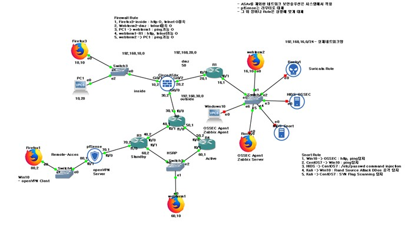
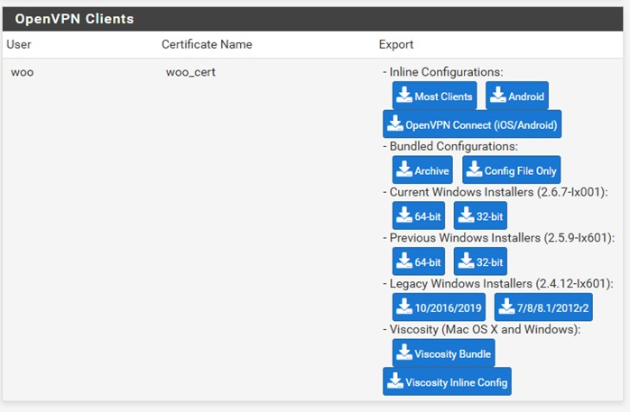
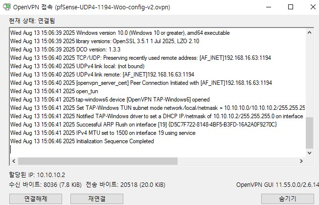
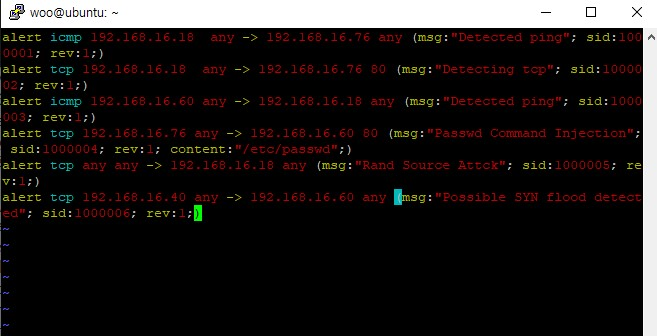
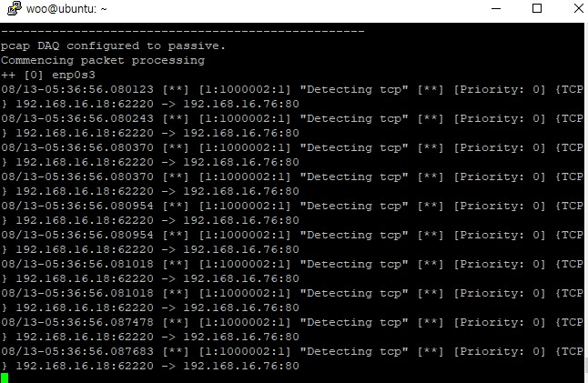
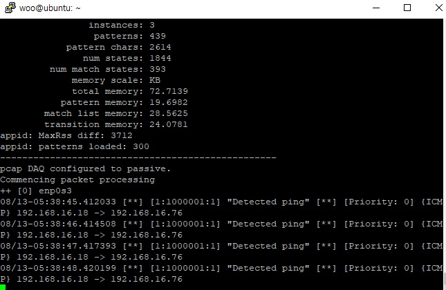
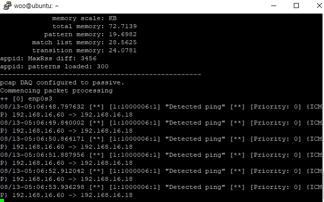
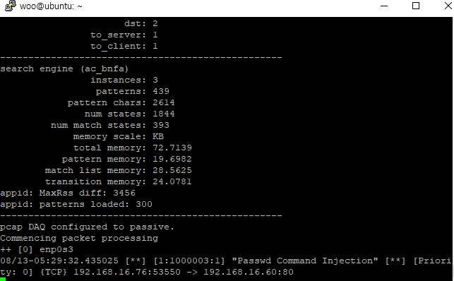
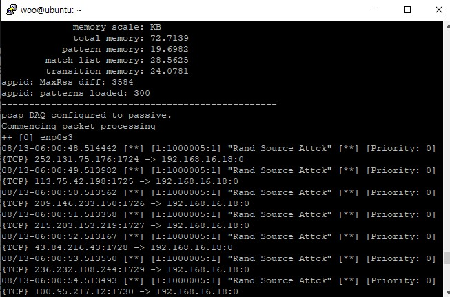

GNS3 토폴로지 — 내부망 / DMZ / 외부망 3구간 구성
내부망·DMZ·외부망 3구간으로 분리된 네트워크를 설계하고, pfSense 방화벽으로 구간 간 트래픽을 제어했습니다.
OSSEC Agent 위치, VPN 게이트웨이, 웹서버 구간의 방어 전략이 포함됩니다.
R
Firefox3(내부) → HTTP · Telnet 허용R
Webterm2(DMZ) → Telnet 허용R
PC1 → Webterm1 Ping 허용R
Webterm1 ↔ R1 HTTP · Telnet 허용R
Webterm2 → PC1 Ping 허용


1
CA 및 서버 인증서 생성
pfSense 웹 콘솔 → OpenVPN Wizard에서 CA와 서버 인증서 생성
2
OpenVPN 서버 설정
터널 네트워크, 로컬 네트워크 대역 설정 및 암호화 알고리즘 지정
3
사용자 계정 및 방화벽 룰 설정
System → User Manager에서 VPN 계정 생성, OpenVPN 인터페이스 방화벽 룰 허용
4
클라이언트 연결 테스트
Client Export에서 Ubuntu용 .ovpn 파일 다운로드 후 사용자 ID/PW 입력해 접속 확인

Snort 룰 적용 화면
# HTTP 접근 탐지
alert tcp any any -> $HOME_NET 80 (msg:"HTTP Access Detected"; sid:1000001;)
# DDoS 랜덤 소스 탐지
alert tcp any any -> $HOME_NET any (flags:S; threshold:type both,track by_dst,count 100,seconds 1; msg:"Possible DDoS"; sid:1000002;)
# SYN 스캔 탐지
alert tcp any any -> $HOME_NET any (flags:S; msg:"SYN Scan Detected"; sid:1000003;)
01
HTTP · Ping 탐지
Win10 → OSSEC 구간 HTTP 및 Ping 트래픽 탐지
탐지 성공
02
Ping 탐지
CentOS7 → Win10 구간 Ping 탐지
탐지 성공
03
Command Injection 탐지
HIDS → CentOS7 /etc/passwd Command Injection 공격 탐지
탐지 성공
04
Rand Source DDoS 탐지
Kali → Win10 랜덤 소스 DDoS 공격 탐지
탐지 성공
05
SYN Flag 스캔 탐지
Kali → CentOS7 SYN Flag Scanning 탐지
탐지 성공

① Win10 → OSSEC HTTP · Ping 탐지 로그

② CentOS7 → Win10 Ping 탐지 로그

③ HIDS Command Injection 탐지 로그

④ Rand Source DDoS 탐지 로그

⑤ SYN Flag Scanning 탐지 로그
← 프로젝트 목록으로 돌아가기